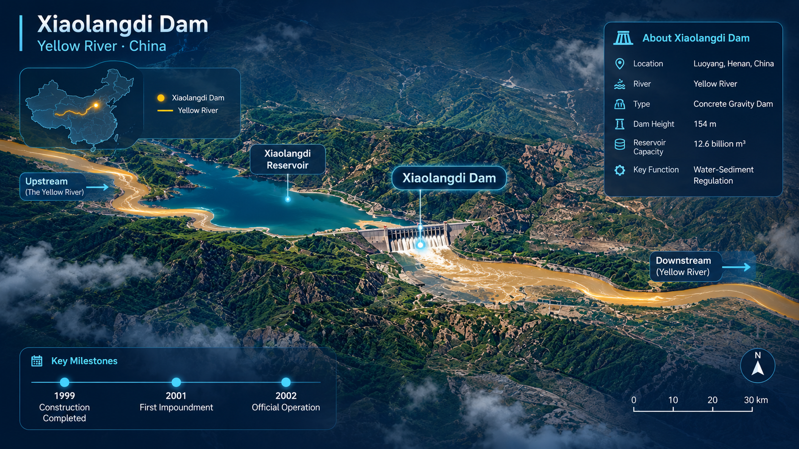

Schematic, not a hydraulic model: the three gates open in turn as the peak release rises (all open at 5,000 m³/s). This illustrates release size, not real gate operation.
Regulation results
Set the peak release, duration and reserve, then press Run regulation.
After each run you get the total score, why each meter moved and a few things to try. Scores come from a simplified teaching model.
Why the scores moved
Things to try next
Run history
No runs yet.
Every run is saved here so you can compare settings and scores side by side, spot your best run and replay any of them.
Dashed lines mark the teaching thresholds used for the status colours. Star = best total score.
Real measurements at the Lijin gauge near the sea, not the dam release. The reservoir level in the animation is illustrative.
Governance Timeline
Each entry links to its sources. Where sources disagree on a date, the entry says so.

About and Method
Course project
River Manager: A Digital Twin Lite of Xiaolangdi Water-Sediment Regulation
Course: Development and Management of the Yellow River Basin, Autumn 2026.
Group 2
| Name | Student ID |
|---|---|
| 唐子原 | 2026270055 |
| 李孝源 | 2026270054 |
| 荣赫 | 2026380114 |
Purpose and scope
The site lets you act as the manager of the Xiaolangdi reservoir during the flood-season water-sediment regulation of the Yellow River. You choose how much water to release, for how long, and how much to keep for supply, and you see simplified effects on four meters: flood safety, reservoir health, water supply and ecology. It is a teaching tool and a "digital twin lite": it imitates the logic of the real system but is not a forecast and must not be used for decisions.
What is real and what is simplified
- Real data: the Replay mode (data/events.json) and the Governance Timeline (data/timeline.json). Each entry names its source.
- Teaching assumptions: everything in the simulation model, the eight Challenge rounds, the policy rules (800 m³/s delta flow, 25% reserve, 6,000 m³/s inflow peak), the scoring weights and the slider ranges. They are designed to make the trade-offs visible, not to match measurements.
- Placeholder model: js/model.js is a deliberately simple stand-in that can later be replaced by a calibrated model without changing the interface.
How the model works (plain language)
- Water balance. Water available = water already stored + inflow for the year (dry, normal or wet). The planned release volume is peak discharge × duration, converted to a percentage of reservoir volume. The supply reserve is a hard limit: the release can only use the water left after the reserve, so a larger plan is cut to what is allowed (the peak actually reached falls with it). Users are then served from the water that remains.
- Sediment balance. A "flushing efficiency" rises with peak discharge and with duration (up to about 10 days). The more efficient the flush, the more sediment leaves the reservoir. The reservoir carries a stock of old sediment from round to round: a flush can only scour as much as the stock holds, and sediment that stays in the reservoir uses up storage.
- Riverbed and channel capacity. A strong, long release scours the lower riverbed and raises channel capacity, but the gain shrinks as capacity rises (the bed coarsens). A weak release lets sediment deposit and lowers it. The capacity is carried into the next round.
- Meters. Each meter is a 0 to 100 score calculated from the results above (see below).
Meter definitions
- Flood safety falls when the peak release is above the current channel capacity, when a large inflow peak is not met by enough release, or when the reservoir is left almost full.
- Reservoir health averages three parts: how much sediment stayed in the reservoir this round, how close storage is to the middle of its range, and how large the carried sediment stock is.
- Water supply combines three parts: how much of demand was served, how much water is left for next year, and how well the supply reserve covers demand. It is reduced if the planned release had to be cut because of the reserve.
- Ecology rewards longer releases (with diminishing returns), more sediment carried downstream and more flow reaching the delta, and is reduced by extreme peak flows. Policy rules subtract points when broken.
What the screen shows
- The scene is a schematic, not a hydraulic model. The three gates open in turn as the peak release rises (all open at 5,000 m³/s), which is a visual rule and not real gate operation. The sediment tint and the amount of sediment reaching the delta follow the model's sediment values. The release gauge compares the peak that was actually delivered with the channel capacity, and its above or within verdict is the model's own flood flag.
- Status colours use the game's thresholds: a meter is Critical below 40, Needs attention from 40 to 59 and Healthy from 60 up. The total score is Critical below 50. These are teaching thresholds, not real operating limits.
- Explanations and suggestions are written by fixed rules from the model's outputs, such as the peak against the channel capacity, the sediment kept in the reservoir and any cut in the release. They are hints about trade-offs. They never change the controls for you.
- Replay on the run history plays back the stored result of an earlier run. It does not run the model again.
Parameters
| Parameter | Value | Status |
|---|---|---|
| Release volume as % of reservoir | peak × days × 0.000683 | Derived: 86,400 s per day ÷ 12.65 billion m³ total storage × 100 (Nunn, 1999). Simplification: total storage, not live storage (5.1 billion m³). |
| Inflow: dry / normal / wet | 20 / 40 / 65 % of reservoir (total above 100 % spills) | Teaching assumption |
| Incoming sediment: low / medium / high | 10 / 20 / 35 units | Teaching assumption |
| Demand: low / medium / high | 20 / 30 / 45 units | Teaching assumption |
| Flushing efficiency | peak ÷ 4,000 × min(1, days ÷ 10) | Anchored to real practice: peak flows around 4,000 m³/s and a high-flow phase of about 10 days (Wang et al., 2017). The formula itself is an assumption. |
| Sediment carried out | incoming × (0.2 + 0.7 × efficiency), plus scour of old deposit = min(stock, 12 × efficiency) | Teaching assumption |
| Starting sediment stock in the reservoir | 30 units | Teaching assumption |
| Channel capacity change per round | +220 × efficiency (max 1) × headroom − 4 × sediment deposited; headroom = (5,000 − capacity) ÷ 3,200, between 0.05 and 1 | Teaching assumption, scaled so the best-case gain is about 100 to 200 m³/s per round, the order of the reported rise from about 1,800 to 4,500 m³/s over 2002 to 2020, and slows as capacity rises |
| Starting channel capacity | 2,800 m³/s | Assumption inside the reported 1,800 to 4,500 m³/s range, 2002 to 2020 |
| Starting reservoir storage | 55 % | Teaching assumption |
| Flow reaching the delta | 0.3 × delivered peak × (0.5 + 0.5 × min(1, days ÷ 12)) + base flow of 60 / 120 / 200 m³/s (dry / normal / wet) | Teaching assumption |
| Policy rules | 800 m³/s delta flow; 25 % reserve; 6,000 m³/s inflow peak | Teaching assumptions, not official policy values |
| Scoring weights | Flood 0.30, Reservoir 0.25, Supply 0.25, Ecology 0.20; policy penalty 20 points (10 on Easy) | Design choice, tunable in GAME_CONFIG (js/game.js) |
About the real data
- Replay values come from a published table of 15 regulation events (2002 to 2013) measured at the Lijin gauge, near the sea. They are not the dam release itself.
- Duration is the end date minus the start date. In 2007 and 2010 there were several events and the years combine them.
- Per-year bankfull capacity and per-event reservoir sediment in and out were not available in the sources used, so they are not shown.
Limitations
- One number for channel capacity; the real lower river has reaches with different capacities, and the smallest one limits safe flow.
- No tributaries, rainfall forecasts, upstream reservoir operation or the two-phase structure of real events (a clear-water phase, then a sediment-export phase).
- Real scouring weakens as the riverbed coarsens (Wang et al., 2017); the model does not include this.
- Ecology is a single score and does not represent delta morphology, nutrients or fisheries.
- Each round is one year; real regulation depends on conditions over many years.
Sources
- Wang, H., Wu, X., Bi, N., Li, S., Yuan, P., Wang, A., Syvitski, J. P. M., Saito, Y., Yang, Z., Liu, S., & Nittrouer, J. (2017). Impacts of the dam-orientated water-sediment regulation scheme on the lower reaches and delta of the Yellow River (Huanghe): A review. Global and Planetary Change, 157, 93–113. https://doi.org/10.1016/j.gloplacha.2017.08.005
- Nunn, J. A. (1999). The Xiaolangdi Multipurpose Dam Project. Society for Mining, Metallurgy & Exploration. onemine.org
- World Bank. Xiaolangdi Multipurpose Project (P003562). projects.worldbank.org
- Liang, L. Water management and allocation of the Yellow River Basin. International Water Management Institute. IWMI archive
- Strategic Study of CAE (2022). Research on water and sediment regulation of the Yellow River under new situation. doi 10.15302/J-SSCAE-2022.01.013
- Xinhua (2026, August 12). Yellow River records 27 consecutive years of uninterrupted flow. english.news.cn
- Xinhua (2022, October 30). China adopts law on Yellow River conservation. english.news.cn
- China.org.cn (2006). Yellow River water use to be regulated. china.org.cn
- People's Daily Online (2026, August 24). Three hydrological stations reveal China's efforts to protect the Yellow River. en.people.cn
- More sources are linked inside each Governance Timeline entry.
Use of AI
The two introduction videos were generated with AI (Seedance 2.5 ai) and are illustrative, not documentary footage. The code of this site was written with web coding assistance from Claude Sonnet 5.5 (Anthropic) and edited by the group. The data entries were compiled with AI-assisted web search and are linked to their sources.
Code map
intro.js (video intro), app.js (interface), game.js (Challenge rules), model.js (simulation), data/*.json (content).